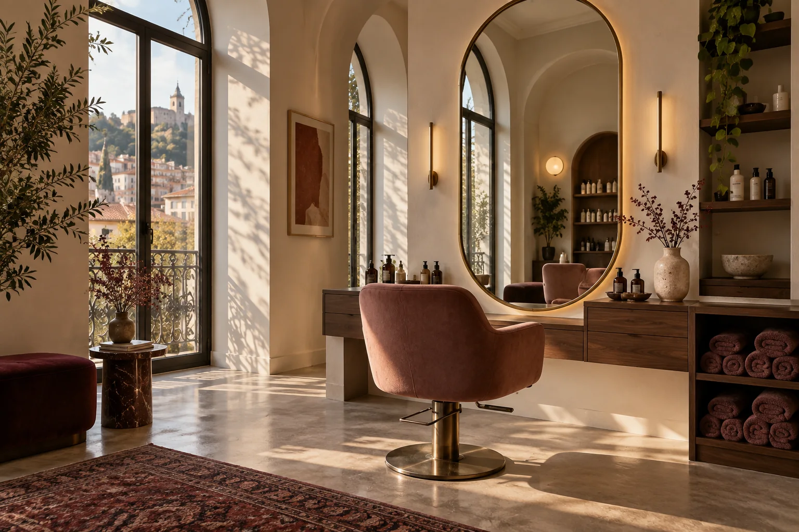
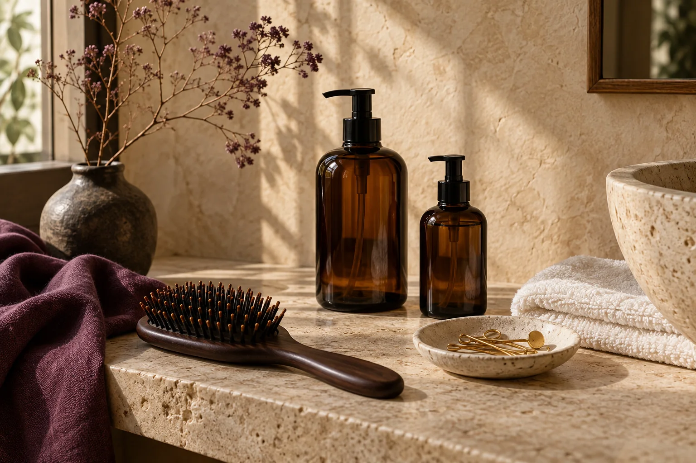

Cut & styling
A shape that works with your hair, your routine, and your own sense of style.
A closer look
A consultation, tailored cut, wash, and finish. Bring a reference or come with an open mind.
Considered cuts, beautiful colour, and the small rituals that make you feel like yourself. A quieter kind of beauty space, in the heart of the city.
Explore the treatments
From your regular refresh to a new direction. Every detail starts with you.
A shape that works with your hair, your routine, and your own sense of style.
A consultation, tailored cut, wash, and finish. Bring a reference or come with an open mind.
Subtle highlights, a richer tone, or a fresh perspective on your signature colour.
The consultation explores your current colour, desired result, and maintenance preferences before planning the appointment.
Unhurried details. A polished finish. A moment that belongs to you.
Explore styling for an occasion, a nourishing hair ritual, or a simple refresh between appointments.

Warm light. Thoughtful details. Time to talk about what you want. The experience should feel as considered as the result.
Take the next step ↗This is a showcase for a fictional brand. It does not accept bookings or offer live services. For a website with this level of care, talk to our studio.
Let’s talk about your website ↗